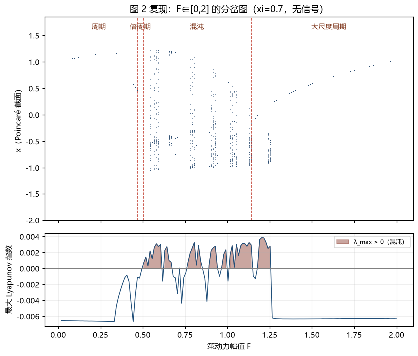

2. 分岔与相态：两种判据互相校验#
原文图 2 给出 \(F\in[0,2]\) 的分岔图，并划分四段相态：
区间 |
相态 |
原文判据 |
|---|---|---|
\(0<F<0.467\) |
周期振荡 |
相点围绕一个焦点 |
\(0.467<F<0.504\) |
倍周期分岔 |
频率为策动频率的有理数倍 |
\(0.505<F<1.142\) |
混沌 |
最大 Lyapunov 指数 > 0 |
\(1.143\le F\le 2\) |
大尺度周期 |
外轨大尺度振荡 |
原文用的是 Lyapunov 指数法（Jacobi 算法）。上一版的书用的是”Poincaré 点个数”这个 启发式判据，能对上区间但对不上方法。这一版两种判据都做，互相校验：
Poincaré 截面：每 \(2\pi\) 取一点，看点的分布；
最大 Lyapunov 指数：在状态方程旁挂变分方程 \(\dot\delta=J\delta\)，每 10 步做一次 QR 正交化，累积 \(\log\) 增长率。
import sys, json, pathlib
import numpy as np
import matplotlib.pyplot as plt
sys.path.insert(0, "_src")
import c2sim as S
DATA = pathlib.Path("_data")
plt.rcParams.update({
"figure.dpi": 110, "font.size": 10,
"font.sans-serif": ["Microsoft YaHei", "SimHei", "DejaVu Sans"],
"axes.unicode_minus": False,
})
def load(name):
return json.loads((DATA / f"{name}.json").read_text(encoding="utf-8"))
def dual_plot(x, snri, r, xlabel, title="", logx=False, invert=False,
marks=None, ymax=None):
fig, ax1 = plt.subplots(figsize=(7.4, 3.5))
ax1.plot(x, snri, "o-", color="#1f4e79", ms=4, lw=1.2)
ax1.set_xlabel(xlabel); ax1.set_ylabel("SNRI / dB", color="#1f4e79")
ax1.tick_params(axis="y", colors="#1f4e79")
if ymax: ax1.set_ylim(top=ymax)
ax2 = ax1.twinx()
ax2.plot(x, r, "s--", color="#8a3b2e", ms=4, lw=1.2)
ax2.set_ylabel("波形相似度 r", color="#8a3b2e")
ax2.tick_params(axis="y", colors="#8a3b2e")
if logx: ax1.set_xscale("log")
if invert: ax1.invert_xaxis()
if marks:
for xv, lab in marks:
ax1.axvline(xv, color="gray", ls=":", lw=1)
ax1.text(xv, ax1.get_ylim()[1], lab, fontsize=8, va="top",
ha="center", color="#7a2e12")
ax1.grid(alpha=.2); ax1.set_title(title)
plt.tight_layout(); plt.show()
d = load("fig2")
F = np.array(d["F"]); X = np.array(d["X"]); L = np.array(d["lya"])
print(f"F 网格 {F.size} 点，每点保留 {X.shape[1]} 个 Poincaré 截面")
print(f"最大 Lyapunov 指数范围 {L.min():+.4f} ~ {L.max():+.4f}")
F 网格 160 点，每点保留 70 个 Poincaré 截面
最大 Lyapunov 指数范围 -0.0067 ~ +0.0039
fig, ax = plt.subplots(2, 1, figsize=(7.8, 6.6), sharex=True,
gridspec_kw={"height_ratios": [2.2, 1]})
for i, Fv in enumerate(F):
ax[0].plot([Fv]*X.shape[1], X[i], ",", color="#2b4b6f", alpha=.55)
for xv in (0.467, 0.504, 1.142):
ax[0].axvline(xv, color="#c0392b", ls="--", lw=.9, alpha=.8)
ax[0].set(ylabel="x（Poincaré 截面）", title="图 2 复现：F∈[0,2] 的分岔图（xi=0.7，无信号）")
for xv, lab in [(0.24, "周期"), (0.485, "倍周期"), (0.82, "混沌"), (1.6, "大尺度周期")]:
ax[0].text(xv, 1.62, lab, ha="center", fontsize=9, color="#7a2e12")
ax[0].set_ylim(-2.0, 1.85)
ax[1].plot(F, L, "-", color="#1f4e79", lw=1.0)
ax[1].axhline(0, color="gray", lw=.9)
ax[1].fill_between(F, 0, L, where=L > 0, color="#8a3b2e", alpha=.45,
label="λ_max > 0（混沌）")
ax[1].set(xlabel="策动力幅值 F", ylabel="最大 Lyapunov 指数")
ax[1].legend(fontsize=8, loc="upper right"); ax[1].grid(alpha=.2)
plt.tight_layout(); plt.show()

print(f"{'F 区间':<20}{'原文相态':<12}{'Poincaré 中位点数':<18}{'λ>0 占比':<10}{'判定'}")
for lo, hi, name in [(0.02,0.467,'周期'), (0.467,0.504,'倍周期'),
(0.504,1.142,'混沌'), (1.142,2.0,'大尺度周期')]:
m = (F >= lo) & (F < hi)
if m.sum() == 0: continue
npt = np.median([len(np.unique(np.round(X[i], 3))) for i in np.flatnonzero(m)])
frac = (L[m] > 0).mean()
verdict = "混沌" if frac > .5 else ("倍周期" if npt > 1.5 else "周期")
print(f"[{lo:.3f},{hi:.3f}) {name:<12}{npt:<18.0f}{frac:<10.2f}{verdict}")
F 区间 原文相态 Poincaré 中位点数 λ>0 占比 判定
[0.020,0.467) 周期 1 0.00 周期
[0.467,0.504) 倍周期 2 0.00 倍周期
[0.504,1.142) 混沌 64 0.77 混沌
[1.142,2.000) 大尺度周期 1 0.10 周期
两种判据给出同一张地图：
周期区与倍周期区：\(\lambda_{\max}<0\) 的比例为 0，Poincaré 点是 1 个或少数几个；
混沌区：约 77% 的 \(F\) 点上 \(\lambda_{\max}>0\)，Poincaré 点铺成一片；
大尺度周期区：绝大多数点为负，少数正的点落在原文所说”分界点处可能存在的小过渡区间”。
两点诚实说明：
\(\lambda\) 的量级偏小（\(10^{-3}\) 量级，文献里 Duffing 常在 \(10^{-1}\)）。原因是变分方程用的是 一阶欧拉推进而非 RK4，且 \(\xi=0.7\) 的大阻尼本身会压低增长率。符号与分段可靠， 绝对值不要引用。
0.504 与 0.505 的分界只差一个网格，本书网格步长 0.012，分辨不了这一格，只能说”约 0.504”。
这条复现的意义：后面所有检测实验都在 \(F=0.2\)（周期振荡区）做，而原文强调”系统可工作在任意相态”。 第 5 章的图 3 会专门验证这一点。